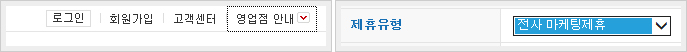
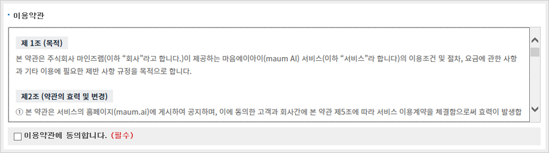
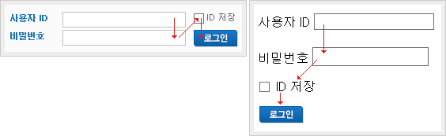
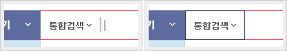
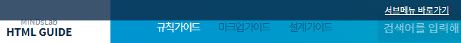
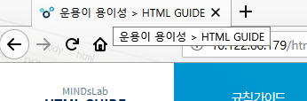

참고사항
- 이 문서는 웹페이지 및 어플리케이션 제작 시 참고해야 할 사항에 대해 기술합니다.
- 이 문서는 웹기술을 활용하여 서비스를 만드는 모든 이를 대상으로 합니다.
- 해당 내용은 웹접근성 콘텐츠 제작 시 적용해야 할 필수 요건입니다. 그 밖 콘텐츠 제작 시 적용시키지 않아도 무관합니다.
- 운용의 용이성은 사용자가 장애 유무 등에 관계없이 웹 사이트에서 제공하는 모든 기능들을 운용할 수 있게 제공하는 것을 의미합니다.
입력장치 접근성
콘텐츠는 다양한 입력장치로 접근할 수 있어야 합니다.
- 키보드 사용 보장
-
모든 기능은 키보드만으로도 사용할 수 있어야 합니다.
웹페이지 탐색용 키보드 단축키 (인터넷 익스플로러) 페이지 스크롤 ↑ ↓ ← → 링크/컨트롤 탐색 Tab, Shift + Tab LINK 1
LINK 2
링크 클릭 Enter 버튼 클릭 Enter, Space Bar 셀렉트박스 선택 ↑ ↓ , Enter 셀렉트박스 펼치기/접기 Space Bar / Esc 라디오버튼 선택 ↑ ↓ ← → , Space Bar 체크박스 선택 Space Bar 마우스로 접근 가능 기능이라면 키보드로도 접근이 가능해야 합니다. 가능한 한 키보드와 마우스에 공통적으로 적용되는 이벤트 핸들러를 이용합니다.
마우스와 키보드 이벤트 핸들러 비교 마우스 이벤트 키보드 이벤트 이벤트 명 이벤트 발생 시점 이벤트 명 이벤트 발생 시점 mousedown 마우스 버튼을 눌렀을 때 keydown 어떤 키가 눌렸을 때 mouseup 마우스 버튼이 복귀될 때 keyup 어떤 키가 눌렸다가 놓았을 때 mouseover 마우스 커서가 객체 위에 있을 때 focus 어떤 객체가 초점을 받았을 때 mouseout 마우스 커서가 객체영역을 벗어날 때 blur 어떤 객체가 초점을 벗어날 때
- 키보드 포커스가 가능한 요소 목록
-
a, area, button, input, select, textarea

- 키보드 포커스가 되지 않는 잘못된 사례
-
<a href="accommodation.html" target="_blank" onfocus="this.blur();">숙박 정보</a>( X ) 링크가 적용 된 콘텐츠의 테두리를 없애기 위해 onfocus="this.blur()"제공 한 경우 키보드 포커스가 되지 않음
<a href="accommodation.html" target="_blank">숙박 정보</a>( O ) 포커스가 이동 가능하게 onfocus="this.blur()"를 제거해 줌
-
<img src="accommodation.jpg" alt="숙박 정보" onclick="popupOpen();" />( X ) a, area input, button 이외의 요소에 onclick 이벤트를 적용한 경우 키보드 포커스가 되지 않음
<a href="#popup" onclick="popupOpen();"><img src="accommodation.jpg" alt="숙박 정보" /></a>( O ) a, area input, button 요소에만 onclick 이벤트를 사용할 것
- 스크롤 가능한 영역의 키보드 컨트롤
-
<div style="overflow-y:auto">이용약관</div>( X ) 포커스가 되지 않는 요소에 스크롤이 있는 경우 키보드로 스크롤해야만 볼 수 있는 내용은 확인할 수 없음
<div style="overflow-y:auto" tabindex="0">이용약관</div> <textarea>이용약관</textarea>( O ) 포커스가 되지 않는 요소에 스크롤이 있는 경우 tabindex="0" 속성을 제공하거나 textarea 요소로 변경하면 해당 영역을 키보드 방향키로 스크롤 할 수 있음

- 초점이동
-
키보드 내비게이션 과정에서 키보드 초점을 받은 링크, 컨트롤 및 입력 서식은 초점을 받지 않은 객체들로부터 구분될 수 있어야 합니다.
또한 Tab 키와 Shift + Tab 키에 의한 초점의 이동 순서는 논리적이며 일관성이 있어야 합니다. 키보드 내비게이션의 순서는 일반적으로 웹 페이지의 좌측 상단 영역에서 우측 하단 영역으로 이동하는 것이 원칙입니다.
포커스 순서를 강제로 변경하기 위한 tabindex 속성값을 사용하지 않으며, 문서의 논리적 순서를 고려하여 마크업합니다.

- 키보드 포커스가 보이지 않는 잘못된 사례
-

.search_keyword {outline:none;*select-dummy:expression(this.hideFocus=true);}( X ) 포커스되는 요소에 점선 테두리를 없애기 위해 outline:none; 등의 속성을 적용한 경우 키보드 사용자는 현재 포커스 위치를 확인할 수 없음
.search_keyword {outline:none;*select-dummy:expression(this.hideFocus=true);} .search_keyword:active, .search_keyword:focus {background:url('http://image.kyobobook.co.kr/ink/images/gnb/bg_search_option_on.gif') no-repeat;}( O ) 현재 포커스 위치를 확인할 수 있도록 outline:none;을 사용하지 않거나 점선 테두리를 대체할 수단(테두리,배경)을 제공함
- 조작 가능
-
웹 페이지에서 제공하는 모든 이웃한 컨트롤은 개별적으로 선택하고 사용할 수 있도록 충분한 크기로 제공해야 합니다. 컨트롤의 크기(대각선 방향의 길이)는 6.0mm 이상이어야 사용자들이 터치스크린을 채용한 기기에서도 조작이 가능합니다. 따라서 모든 컨트롤의 크기는 대각선 방향으로 6.0mm 이상 되도록 제공하는 것이 바람직합니다.
※ 컨트롤의 크기는 대각선의 길이를 측정하며, 모바일 기기의 경우에는 4inch 화면을 기준으로 측정하며, 데스크톱 PC 모니터는 17인치 모니터를 기준으로 측정함
PC (96DPI) : 6mm = 25.4px
모바일 (160DPI) : 6mm = 37.8px
충분한 시간 제공
콘텐츠를 읽고 사용하는 데 충분한 시간을 제공해야 합니다.
- 응답시간 조절
-
시간제한이 있는 콘텐츠는 시간적인 제약이 있음을 사용자에게 반드시 알려주어야 합니다. 또한 다음과 같은 예외의 경우에 해당하는 콘텐츠를 제외한 모든 콘텐츠는 시간제약을 회피하거나 우회할 수 있는 수단을 함께 제공해야 합니다.
- 시간제한이 있는 콘텐츠
-
- 일정한 시간마다 그 내용의 일부 또는 전체가 자동적으로 갱신되는 콘텐츠
- 일정한 시간이 경과하면 다른 웹 페이지로 이동하도록 구성된 콘텐츠
- 사용자가 제어하지 않아도 자동적으로 스크롤되는 콘텐츠
- 일정시간 후 사라지거나 접근이 차단되는 콘텐츠
- 제한 시간 연장 방법 제공
-
제한 시간을 가진 기능을 제공할 때 사용자가 제한 시간을 연장할 수 있도록 해야 합니다.
- 메타 태그를 이용한 페이지 재 이동 방법 제공
-
<meta http-equiv="refresh" content="0;URL='redirect.html'" /> <p><a href="redirect.html">redirect.html</a> 페이지로 이동합니다.</p>메타(meta) 태그를 이용하여 자동 재이동(redirect) 하는 페이지의 경우 메타테그의 content 값이 0보다 크면 재이동 페이지가 브라우저의 히스토리에 남아 이전 페이지로 이동하기 어렵게 하므로 content 값을 반드시 0으로 설정합니다.
- 정지 기능 제공
-
이동하거나 스크롤되는 콘텐츠는 사용자가 이동이나 스크롤을 일시 정지시키거나 지나간 콘텐츠 또는 앞으로 나타날 콘텐츠를 사용할 수 있도록 "앞으로 이동", "뒤로 이동", "정지" 등의 컨트롤을 제공해야 합니다.
변화하는 배너의 정지나 이전, 다음 기능을 제공할 수 없다면 사용자가 개별 배너를 직접 선택할 수 있는 방법 또는 전체 배너를 보여줄 수 있는 방법을 제공합니다.
자동으로 갱신되는 콘텐츠는 읽고 있는 사용자가 충분한 읽을 시간을 얻기 위해 일시정지 시킬 수 있어야 합니다. 또한 멈추었다 다시 시작하면 읽고 있던 그 이후부터 변경되어야 합니다.
- 자동으로 변경되는 콘텐츠
-
- 자동으로 변화하는 배너
- 텍스트 스크롤
광과민성 발작 예방
광과민성 발작을 일으킬 수 있는 콘텐츠를 제공하지 않아야 합니다.
※ 광과민성 증후: 빛의 깜빡거림에 의해 발작을 일으키는 증상을 말합니다.
- 깜빡임과 번쩍임 사용 제한
- 초당 3~50회 주기로 깜빡이거나 번쩍이는 콘텐츠를 제공하지 않아야 합니다.
쉬운 내비게이션
콘텐츠는 쉽게 내비게이션 할 수 있어야 합니다.
- 반복영역 건너뛰기
-
콘텐츠의 반복되는 영역은 건너뛸 수 있어야 합니다.
/* skip navigation */ #skipNav{position:absolute; left:0; width:100%; height:0; z-index:9999;} #skipNav a{display:block; overflow:hidden; height:0; padding:0 10px; color:#000; text-align:right;} #skipNav a:hover, #skipNav a:focus, #skipNav a:active{position:absolute; width:100%; height:30px; color:#fff; text-decoration:underline; text-align:center; line-height:30px; background:rgba(11,42,74,0.8);} #skipNav:hover,#skipNav:focus,#skipNav:active{position:relative;};<!-- #skipNav --> <div id="skipNav"> <a href="#contents">본문 바로가기</a> <a href="#gnb">주메뉴 바로가기</a> <a href="#snb">서브메뉴 바로가기</a> </div> <!-- //#skipNav -->※ IE에서 본문 바로가기 링크가 정상적으로 동작하지 않는 경우 컨텐츠 블럭에 min-height 또는 height 값을 지정합니다.
- 제목제공
-
제한 시간을 가진 기능을 제공할 때 사용자가 제한 시간을 연장할 수 있도록 해야 합니다.
<title>운용이 용이성 > HTML GUIDE</title>
- 각 프레임을 구분할 수 있는 간단명료한 제목 제공
-
<iframe title="로그인 프레임"></iframe> <iframe title="광고 프레임"></iframe> <iframe title="빈 프레임"></iframe>
- 각 콘텐츠 블록을 구분할 수 있는 제목 제공
-
<h1>학교</h1> <p>학교(學校) 또는 배움터는 교육을 위한 장소입니다. 대체로, 교실과 칠판 등 교육에 필요한 시설을 갖추고, 여러 학생들이 교사의 지도에 따라 지식을 얻는 형태로 교육이 이루어집니다.</p> <h2>대한민국의 학교</h2> <p>대한민국의 경우에는 한국전통문화대학교(문화재청 관할) 등을 제외하면 국공립 학교는 모두 교육과학기술부에서 관할합니다.</p>
- 적절한 링크 텍스트
-
링크 텍스트는 용도나 목적을 이해할 수 있도록 제공해야 합니다.
보다 자세한 내용을 보시려면 <a href="here.html">여기</a>을 클릭하세요.( X ) 용도나 목적을 이해할 수 없는 링크 텍스트 : ‘여기’ 등과 같이 명확하지 않는 링크 사용
-
보다 자세한 <a href="guide.html">사이트 이용 방법</a>을 확인하세요.( O ) 링크의 용도나 목적을 이해할 수 있도록 적절한 링크 텍스트 제공
-
사이트 이용 방법 <a href="guide.html">바로가기</a>( O ) URL에 관한 정보를 제공하는 문장에 이어서 링크 텍스트를 삽입
-
<h2>공지사항</h2> <ul> <li>우체국택배 토요일 배송 휴무안내 </li> <li>인터넷교보문고 서비스점검 안내 </li> </ul> <a href="notice.html">더보기</a>( O ) '더보기' 링크는 앞뒤 맥락으로부터 '공지사항 더보기' 임을 알 수 있습니다.
출처 : 웹 콘텐츠 제작기법 (웹접근성연구소)